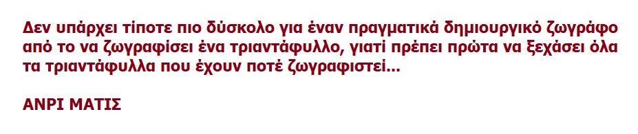

Ο φωβισμός εκφράζει, σε γενικές γραμές, μία ζωγραφική «καθαρή» και έντονη, απελευθερωμένη από την καταπίεση της υποκειμενικότητας στην τέχνη, καθοδηγούμενη αποκλειστικά και μόνο από το ένστικτο του δημιουργού σε σχέση με την απόλυτη χρωματική αρμονία. Σύμφωνα με αυτό το ένστικτο, ο καλλιτέχνης θα πρέπει να αποτυπώνει αποκλειστικά αυτό που φαντάζεται σε σχέση με το χρώμα και τη γραμμή.

Οι φωβιστές απλουστεύουν τη γραμμή τόσο, ώστε στα μάτια του αμύητου τα έργα τους πολλές φορές να φαντάζουν ως «παιδικά». Η ζωγραφική αποτελεί αυτοσκοπό για το δημιουργό και έννοιες όπως η εξιδανίκευση και η πιστή αναπαράσταση, η συμμετρία και η λεπτομερής αποτύπωση θάβονται οριστικά. Είναι τέτοια η ένταση και η ανάγκη για πηγαία και αυθόρμητη έκφραση των καλλιτεχνών αυτών ώστε, σε μια εποχή όπου ο Ιμπρεσσιονισμός αντιμετωπίζεται ακόμα με καχυποψία και σκεπτικισμό από τους κριτικούς και το κοινό, ο Ματίς και η παρέα του τον θεωρούν ήδη ξεπερασμένο.
Ανρί Ματίς-Ανοιχτό παράθυρο-1905
Αντρέ Ντεραίν-Το πορτρέτο του Ματίς-1905
Τα έργα των φωβιστών χαρακτηρίζονται λοιπόν από έντονα χρώματα, με δυνατές αντιθέσεις, δίνουν έμφαση στο κόκκινο, απλουστεύουν τη φόρμα και παραμορφώνουν ελαφρώς τη γραμμή θέλοντας έτσι να επικεντρώσουν την προσοχή του θεατή στην έκφραση συναισθημάτων μέσω της χρωματικής αντίθεσης και έντασης.
Ανρί Ματίς-Το κόκκινο δωμάτιο-1908
Μορίς Ντε Βλαμένκ-Στο μπαρ-1900
ΚΥΡΙΑ ΧΑΡΑΚΤΗΡΙΣΤΙΚΑ ΤΗΣ ΖΩΓΡΑΦΙΚΗΣ ΣΤΟ ΚΙΝΗΜΑ ΤΟΥ ΦΩΒΙΣΜΟΥ:
Λατρεία του χρώματος, το οποίο αντιμετωπίζεται ως το κύριο στοιχείο του κάθε έργου.
Χρήση έντονων, καθαρών και βίαιων χρωμάτων με διακοσμητική διάθεση.
Αυτονομία και πλήρης εκφραστική ελευθερία του καλλιτέχνη στη χρήση του χρώματος. Οι φωβιστές πιστεύουν απόλυτα στη συγκινησιακή δύναμη του χρώματος και το απελευθερώνουν από την πιστή απόδοση της πραγματικότητας. Για παράδειγμα στα έργα τους τα δέντρα μπορούν να είναι κόκκινα και η θάλασσα κίτρινη!
Η μορφή και το σχέδιο απλοποιείται και έχει ως στόχο την εκφραστικότητα και όχι την πιστή αναπαράσταση της πραγματικότητας.
Η θεματική αποτελείται από θαλασσινά τοπία, νεκρές φύσεις και πορτραίτα.